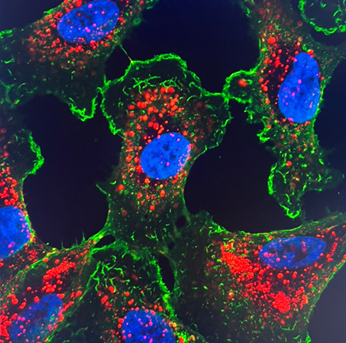

Apresentação oral: Controlled Release Society (CRS) 2024 Annual Meeting & Expo (Bolonha, Italia): “Viral/nonviral nanoparticles as promising vectors for gene transfection to the eye”
Fotos e Ilustrações do Projeto:

Microscopia confocal mostrando a internalização do siRNA em células ARPE-19.